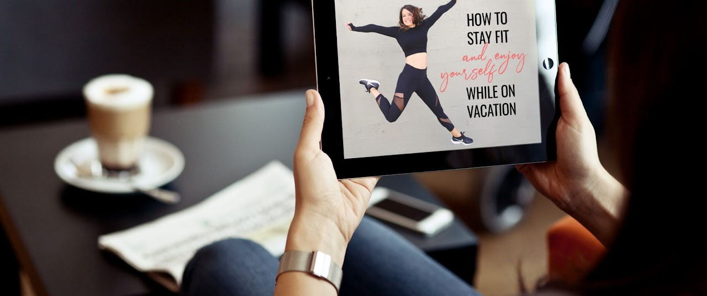
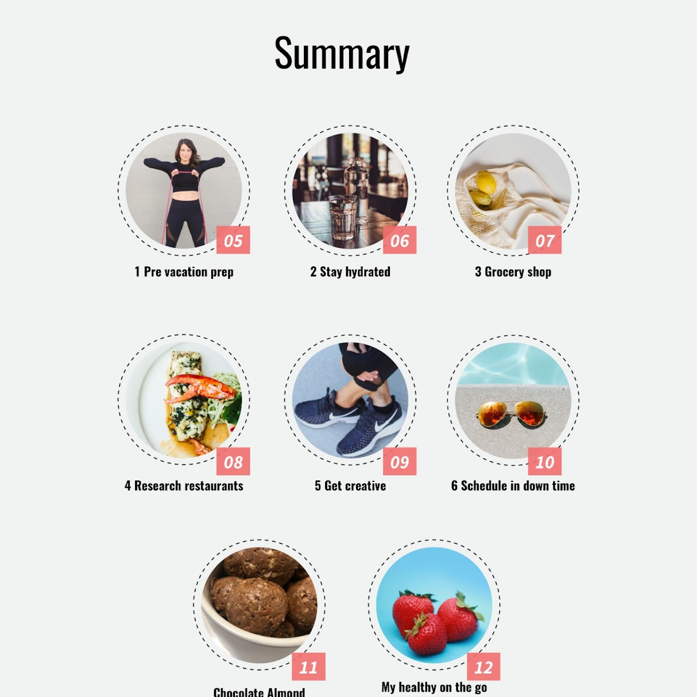
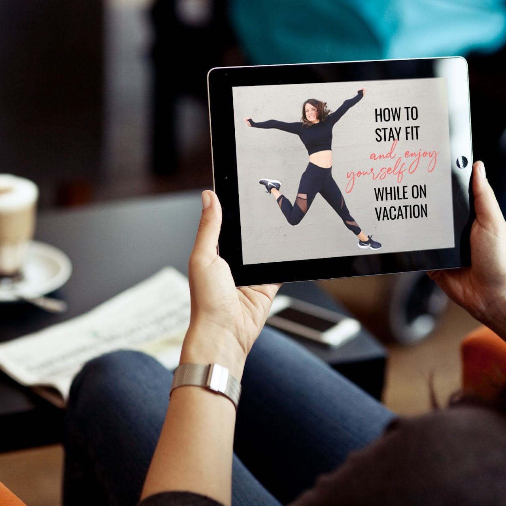
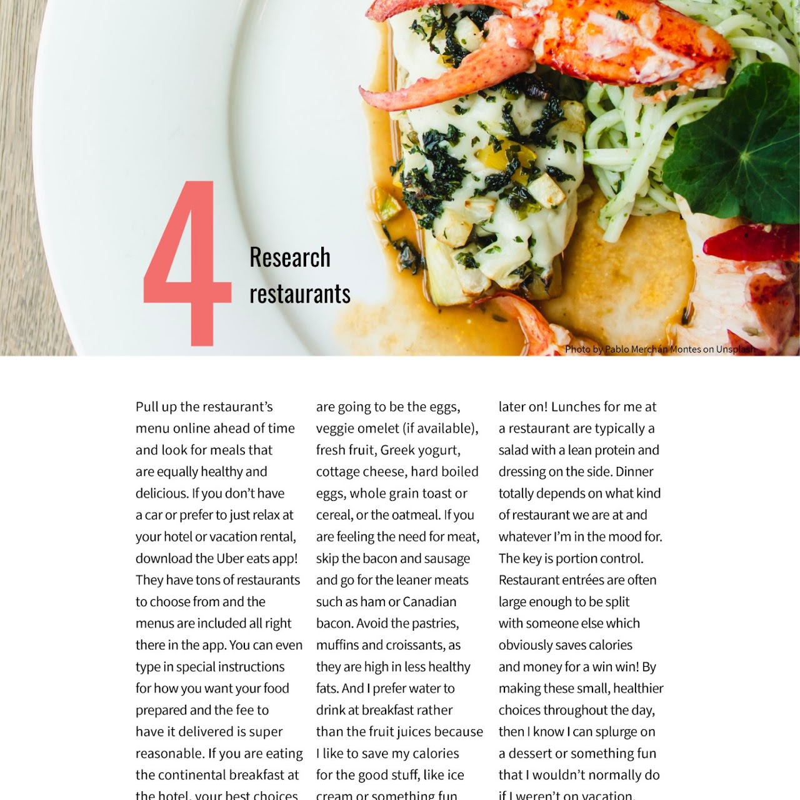

The Free Fit Travel Guide
Challenge: Design a product with useful content to help businesswomen to stay fit while traveling.
Solution: The E-Book Fit Ditts is a digital product that allows users to access useful information curated by their fitness personal trainer to help them exercise, eat and make healthy choices while on the road.
Design team: Nina Vital (visual identity and branding) and me.
My role: UI Design, interaction
The process
This was a redesign UI design project. The client had already done a previous version of a PDF she used to share with her customers. She had just done a rebranding, some new photos and so she needed to add the new stuff.
Who was going to use it
American Businesswomen who are always traveling but want to keep their fit on the go.
Benchmarking
First, we did some benchmarking and used what we found to show her the need to update the material and also the way it should be delivered.
The alternative
We proposed to redesign the whole thing, including the copy. This was going to also be a PDF, but, this time we would focus on some interactions to help the readers to find the information fast.
The prototype

Then we did a prototype and asked her to use it and shared it with some people we knew that fit the profile. The feedback she gave us was very important. For example, we have posted some illustrative photos of foods that were not appropriate for your fitness program. Only after she flagged it we realized the problem and made the correction, with her indication.

Some of her clients (all women) also asked for a recipe and for some links where to buy some gadgets. They gave us some valuable information, like how it would be nice to see some tips about the right place to exercise, and also simple things like tips about what clothes they should take in the suitcase.

All ideas were very well received by the team and incorporated into the prototype. At each iteration, it was retested and verified by the customer until it was flawless.
The result
The final version was The Free Fit Travel Guide, an interactive PDF to mobile and desktop devices, that conveyed both her amazing content and a clear interface, with a clear path to guide the readers to find what they need, faster, easier, and in a pleasant way.